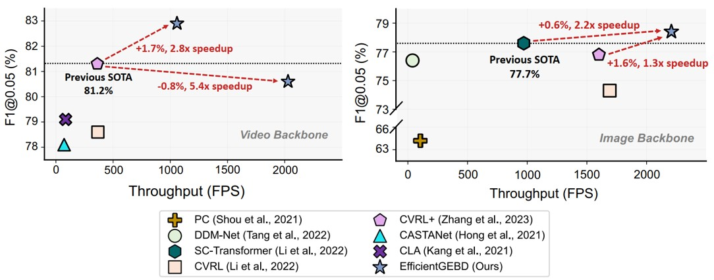
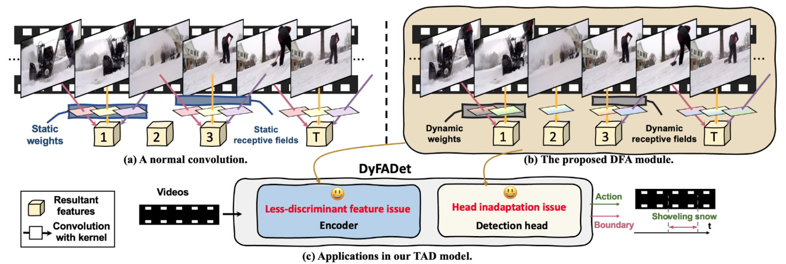
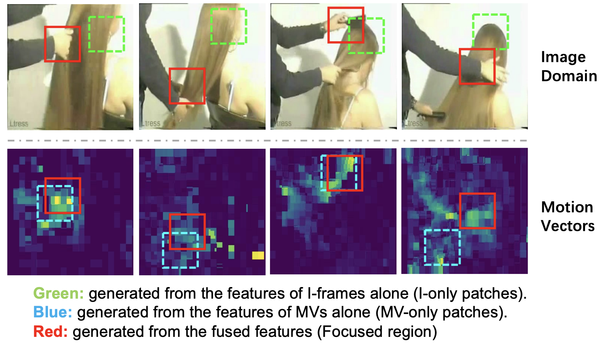
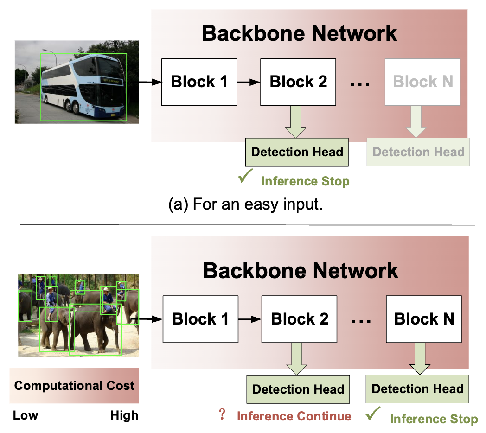
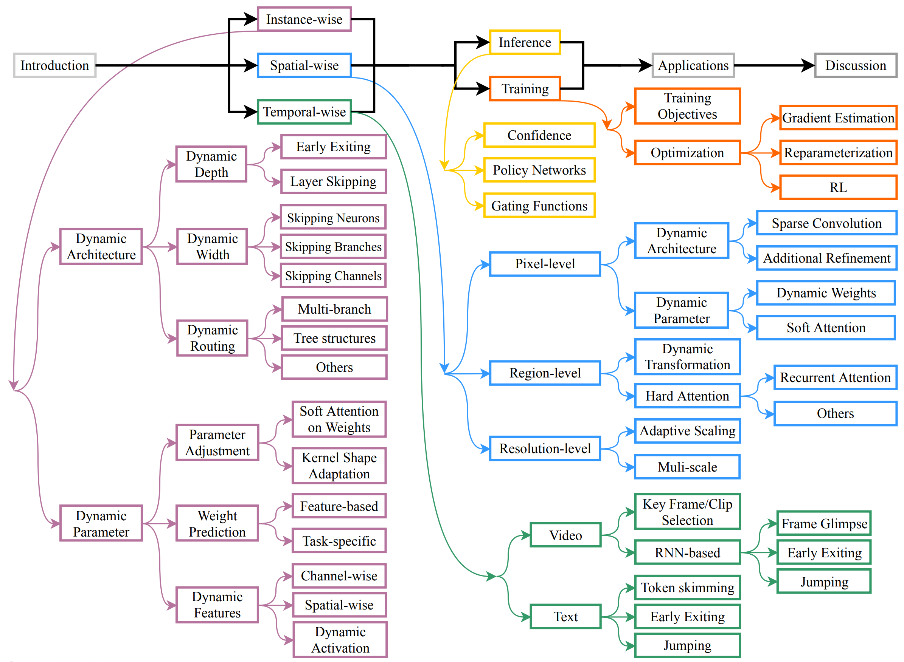

Le Yang (杨乐)
Assistant Professor, Xi'an Jiaotong University
Google Scholar🧑🎓 Bio
I'm currently as an assistant professor at Xi'an Jiaotong University. My research focuses on deep learning and computer vision, in particular Dynamic Neural Networks, Efficient Learning/Inference of deep models, Video Understanding and Large Vision-Language Models(LVLMs).
🔥Our group are looking for self-motivated Master candidates and undergraduate student interns for the ongoing researches. Please drop me an email with your resume if you are interested.
🏫 Work Experience
- 06/2021 - now, Assistant Professor, Xi'an Jiaotong University.
- 06/2021 - now, Postdoctoral researcher, Xi'an Jiaotong University. advised by CAS Fellow, Prof. Xiaohong Guan.
- 12/2021 - 07/2022, Visiting Scholar, ML Group, Aalto University. Advised by Prof. Arno Solin.
📚 Education
- 09/2015 - 06/2021, Ph.D., Department of Automation, Tsinghua University. Advised by Prof. Shiji Song and Prof. Gao Huang.
- 09/2011 - 07/2015, B.E., Department of Automation, Northwestern Polytechnical University.
📰News
- 07/2024: 🎉 Our works, EfficientGEBD is accepted at ACM MM 2024!
- 07/2024: 🎉 Three of our works (DyFADet, DyBDet, and Typographic-attack-for-LVLM) are accepted at ECCV 2024!
- 06/2024: 🏆 Adadet is selected as the highly cited paper in ESI!
- 06/2023: 🎉 Our work (CoViFocus) is accepted at TCSVT!
- 05/2023: 🎉 Our work (AdaDet) is accepted at TCDS!
📄 Publications
Representative Publications
Full publication list

Rethinking the Architecture Design for Efficient Generic Event Boundary Detection [PDF] [code]
Ziwei Zheng, Zechuan Zhang, Yulin Wang, Shiji Song, Gao Huang, Le Yang*✉.
ACM Multimedia (ACM MM), 2024
In this paper, we experimentally reexamine the architecture of GEBD models and uncover several surprising findings, demonstrating that some of sophisticated designs are unnecessary for building GEBD models. We also show that the GEBD models using image-domain backbones conducting the spatiotemporal learning in a spatial-then-temporal greedy manner can suffer from a distraction issue, which might be the inefficient villain for the GEBD.

DyFADet: Dynamic Feature Aggregation for Temporal Action Detection. [PDF] [code]
Le Yang*✉, Ziwei Zheng*, Yizeng Han, Hao Cheng, Shiji Song, Gao Huang, Fan Li.
European Conference on Computer Vision (ECCV), 2024
We propose a new dynamic feature aggregation module that can simultaneously adapt the kernel shape and parameters based on input. The TAD model based on DFA can boosts the performance by a large margin.

Dynamic Spatial Focus for Efficient Compressed Video Action Recognition. [PDF]
Ziwei Zheng, Le Yang✉, Yulin Wang, Miao Zhang, Lijun He, Gao Huang, Fan Li.
IEEE Transactions on Circuits and Systems for Video Technology (T-CSVT), 2023
We propose the fist dynamic spatial focus video recognition model for compressed video (such as MPEG4 and HEVC).

AdaDet: An Adaptive Object Detection System Based on Early-Exit Neural Networks. [PDF]
Le Yang, Ziwei Zheng, Jian Wang, Shiji Song, Gao Huang, Fan Li✉.
IEEE Transactions on Cognitive and Developmental Systems (T-CDS), 2023
We propose a novel early-exiting adaptive inference mechanism for object detection tasks. The images containing few-large-clear objects will exit from the network early during inference. Only these images containing multiple overlapping objects will be considered as hard samples and processed by the full network.

Dynamic Neural Networks: A Survey [PDF] [智源社区] [机器之心-在线讲座] [Bilibili] [Slides]
Yizeng Han*, Gao Huang*✉, Shiji Song, Le Yang, Honghui Wang, Yulin Wang
IEEE Transactions on Pattern Analysis and Machine Intelligence (T-PAMI), 2021
In this survey, we comprehensively review the rapidly developing area, dynamic neural networks. The important research problems, e.g., architecture design, decision making scheme, and optimization technique, are reviewed systematically. We also discuss the open problems in this field together with interesting future research directions.

CondenseNet V2: Sparse Feature Reactivation for Deep Networks. [PDF][code][知乎]
Le Yang*, Haojun Jiang*, Ruojin Cai, Yulin Wang, Shiji Song, Gao Huang✉, Qi Tian.
IEEE/CVF Conference on Computer Vision and Pattern Recognition (CVPR) 2021
We propose a new feature reusing method in deep networks through dense connectivity, which can simultaneously learn to 1) selectively reuse a set of most important features from preceding layers; and 2) actively update a set of preceding features to increase their utility for later layers.

Resolution Adaptive Networks for Efficient Inference. [PDF] [code]
Le Yang*, Yizeng Han*, Xi Chen*, Shiji Song, Jifeng Dai, Gao Huang✉
IEEE/CVF Conference on Computer Vision and Pattern Recognition (CVPR) 2020
The proposed Resolution Adaptive Network (RANet) makes use of spatial redundancy in images to conduct the adaptive inference for the first time. The RANet is inspired by the intuition that low-resolution representations are sufficient for classifying “easy” inputs containing large objects with prototypical features, while only some “hard” samples need spatially detailed information.
🎖 Awards
- The 2021 Postdoctoral Innovative Talent Program(2021博新计划), advised by CAS Fellow, Prof. Xiaohong Guan, 2021.
- Outstanding Graduate of Tsinghua University (清华大学优秀毕业生), 2021.
- Outstanding Graduate of Beijing (北京市优秀毕业生), 2021.
🧑💻 Professional Activities
- Technical Programm Committee of UbiComp2023-CPD, MobiCom2024-PICASSO.
- Program Committee (PC) member of IJCAI 2021.
- Reviewer for IJCV, T-PAMI, T-NNLS, T-Cyber, T-CSVT, ...
- Reviewer for CVPR, ICCV, IJCAI, NeurIPS, ICML, ICLR...
📧 Contact
- yangle15 at xjtu dot edu dot cn
- Address: Room 140, Pengkang building, Xingqing Campus, Xi'an Jiaotong University, Xi'an 710049, China.